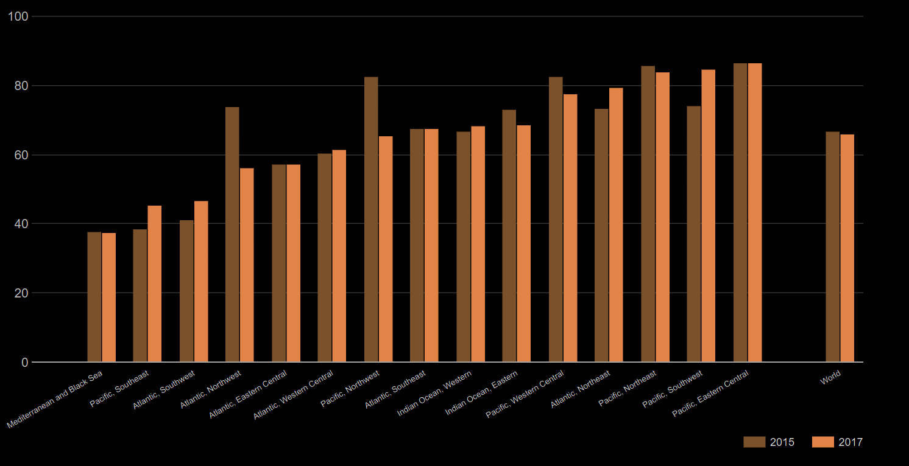
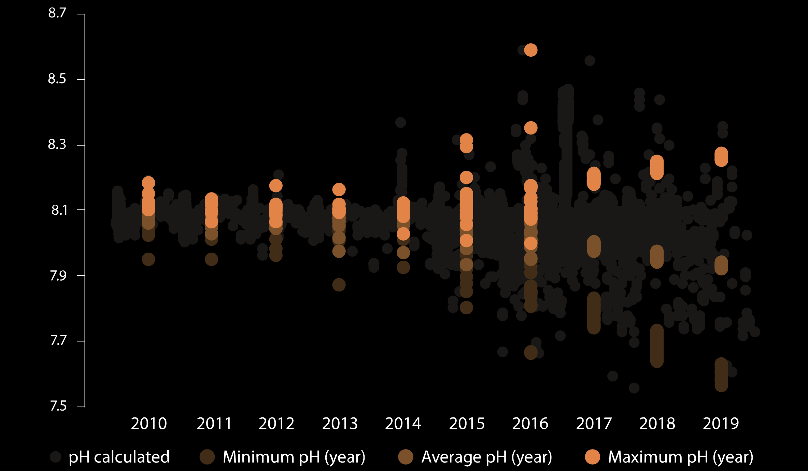
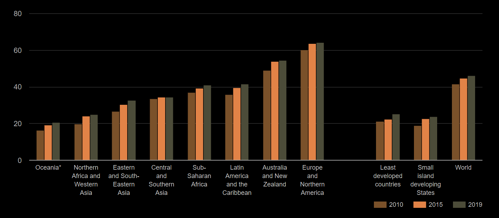

Världens hav – deras temperatur, kemi, strömmar och liv – driver globala system som gör jorden beboelig för mänskligheten. Haven täcker 70 procent av vår planet och över tre miljarder människor är beroende av den marina och kustnära biologiska mångfalden för sin försörjning. Hur vi hanterar våra hav är avgörande för mänskligheten som helhet och för att balansera effekterna av klimatförändringarna.

Ett av FN:s delmål inom hav och marina resurser är att främja hållbart fiske. Men vad är egentligen
hållbart fiske?
Enligt MSC, innebär hållbar fiske tre saker.
1. Att låta tillräckligt mycket fisk vara kvar i haven.
2. Skydda fiskars och andra marina livsformers miljöer.
3. Trygga framtiden för de människor som är beroende av fiske som arbete.
Läs mer om MSC-märket genom att trycka på konserven nedan:
FN vill senast 2020 införa en effektiv fångstreglering och stoppa överfiske, olagligt,
orapporterat och oreglerat fiske liksom destruktiva fiskemetoder.
FN vill även senast 2020 genomföra vetenskapligt baserade förvaltningsplaner i syfte att återställa
fiskbestånden så snabbt som möjligt fastställt utifrån deras biologiska egenskaper.
Stapeln till vänster visar andelen fisk vars population beräknas vara på en hållbar nivå, baserat på det
geografiska området som är skrivet i kolumnen. Det vill säga, ju högre desto bättre.
Främja hållbart fiske

Ett annat delmål handlar om att minska havsförsnurningen. Genom att förstå varför detta är viktigt kan
man också ta aktiva handlingar för att närma sig målet.
När koldioxiden ökar i atmosfären, absorberas cirka 25 procent av det koldioxidet i havet. Haven har en
betydande roll när det gäller att minska påskyndnaden av havsförsurningen. Det finns dock negativa
konsekvenser av att haven tar upp mer koldioxid. När haven tar upp mer koldioxid ökar även surhetsgraden
vilket förändrar miljön som plant och djurliv lever i.
FN vill minimera och åtgärda havsförsurningens konsekvenser, detta genom att bland annat öka det
vetenskapliga samarbete mellan medlemsländer på alla nivåer.
Diagrammet till vänster visar pH-nivån i havet över tid. Denna vill FN ska gå mot en negativ trend, att
talet minskar med tiden. Det skulle innebära att havet blir mindre surt.
Minska havsförsurningen
